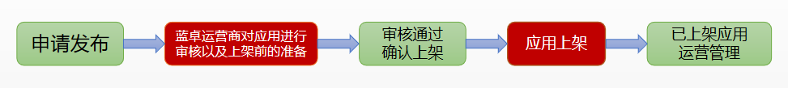

应用接入规范
应用接入规范
1. 提交应用的前提条件¶
应用申请发布上架前，请确认开发者实名认证已符合接入规范，才可以将开发者创建的应用提交应用商店发布。
1.1. 开发者资质证明
- 企业开发者 上传四证合一营业执照的扫描件，其上清晰呈现组织机构代码证、税务登记证、社会保险登记证和工商营业执照信息（台湾或者海外地区的营业执照也可，但应用必须是国内的版权，否则需要文化传播部的批准）。
- 个人开发者 上传个人有效身份证原件的正反两面扫描件（外籍人士没有身份证请上传护照），并且填写的个人姓名以及身份证号需要扫描件上的信息保持一致。
1.2. 资料真实有效
- 所有上传证明材料必须真实有效，提供的资料足以判断您的真实身份，不能提交虚假证件。
- 开发者提供的联系人，联系电话将作为开放平台与开发者联系的渠道，需真实有效，若虚假无效将不能提交应用。
2. 上架流程¶
为确保接入开放平台应用的质量、提高后续运营服务的稳定性，应用发布上架前需要满足接入规范。
请开发者按照下面的接入标准，对应用进行仔细检查及测试，对于不符合规范项进行修改，以加快应用上线速度。
上架流程流程如下图所示：

3. 接入周期和结果通知¶
符合接入规范的应用，蓝卓运营方会在3-5个工作日内将结果通知给开发者。 如果是不符合接入规范的应用，将描述具体的不符合原因。
通知的方式包括：
- 以 开发者控制台 站内信为主。
开发者登录 open.supos.net ，即可看到我的消息通知。 - 电子邮件，联系电话/手机通知为辅。
请一定保证开发者信息中填写的邮箱地址以及联系人电话/手机是有效的，并及时查看通知信息内容，根据通知内容进行后续操作。
如有任何疑问请通过官方联系运营人员进行咨询。